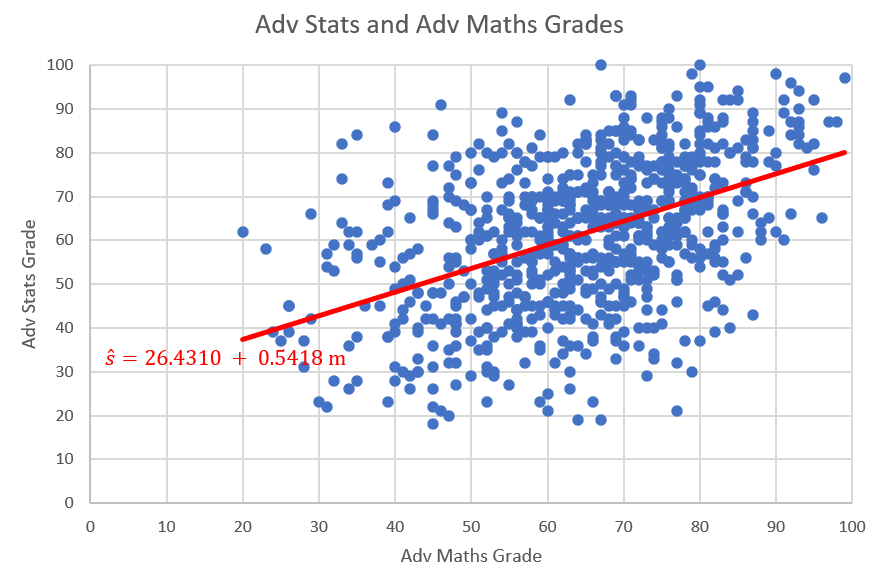
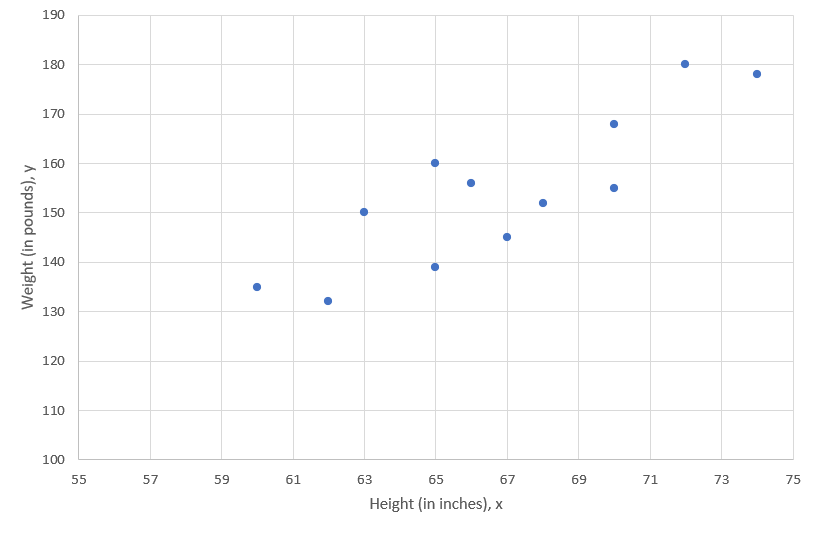
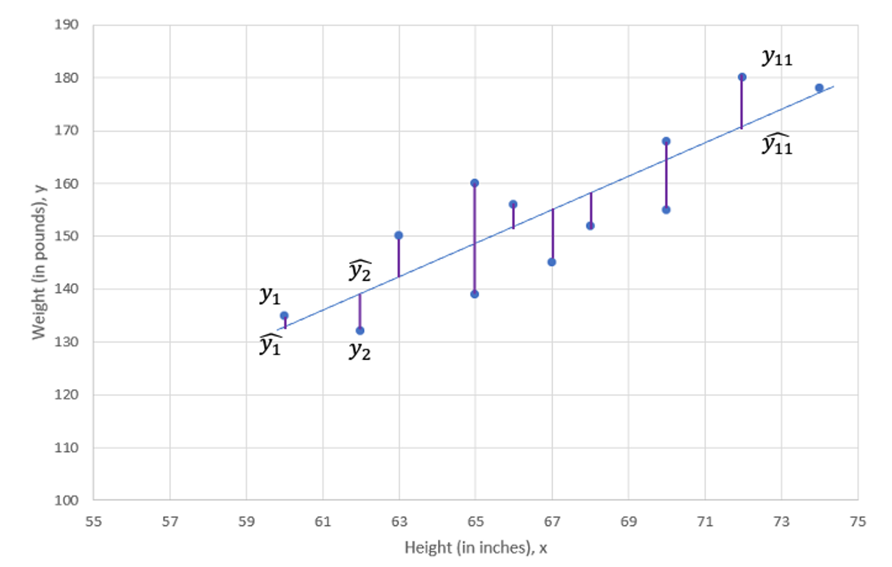
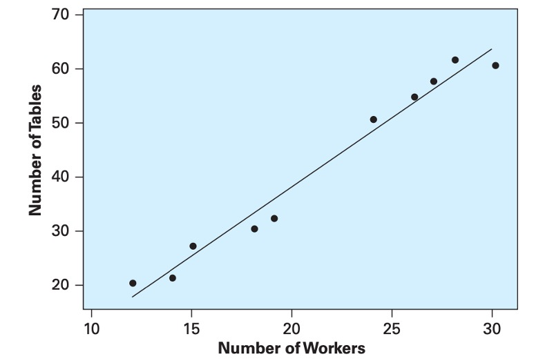
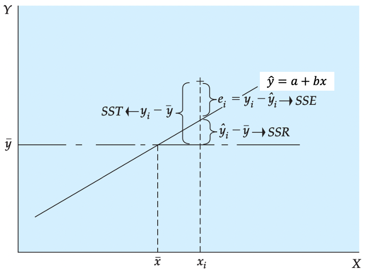
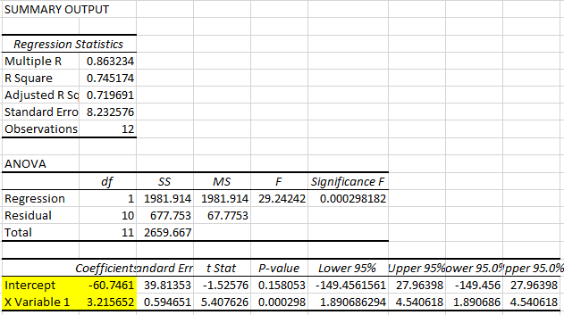
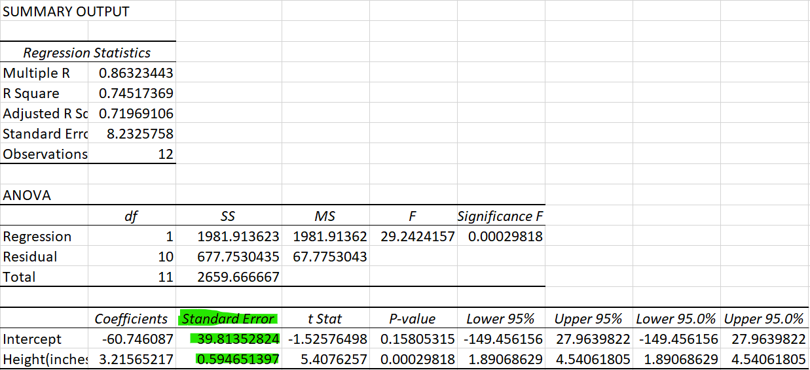
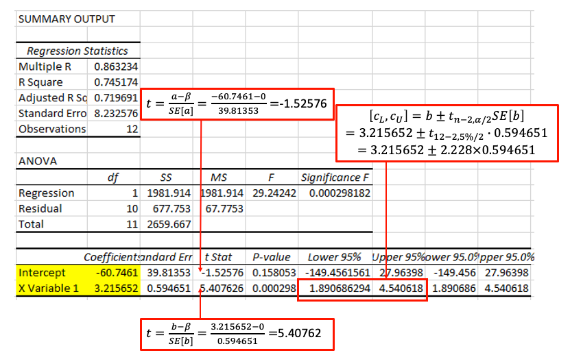

Hypothesis Testing
Recap: Simple Regression
In Correlation and Regression section (part of Descriptive Statistics), we saw how the relationship between two variables can be described by using scatter plots to provide a picture of the relationship and correlation coefficients to provide a numerical measure. In many economic and business problems, a specific functional relationship is needed. For instance,
- A manager would like to know what mean level of sales can be expected if the price is set at UKP 15 per unit.
- If 300 workers are employed in a factory, how many units can be produced during an average day?
In many cases, we can adequately approximate the desired functional relationships by a linear equation as explained in the following sections. There are three reasons why we may wish to formalise a (linear) relationship
- We may want to quantify the relationship between variables.
- We may then want to use such relationships for predicting outcomes (see the above two examples).
- We may want use such models to decide whether there are causal relationships between variables.
The last of these is actually very difficult to achieve and we will not be able to touch on this in the context of this unit. Regression models are, in the first place, merely descriptive statistics much like the correlation coefficient. In fact correlation coefficients and regression relationships are closely related. Any correlation described in a regression model is, in the first place, just a descriptive relationship and does not automatically describe a causal relationships.
In the earlier section on correlation and regression we discussed the relationship between mathematics and statistics grades by students in subsequent semesters (mathematics in Semester 1 and statistics in semester 2). Here is a scatter plot of the data in “Maths and Stats grades.xlsx”.

The plot and resulting regression line describes a positive relationship between mathematics and statistics grades.
Linear Regression Model
We first look at what we have studied before. the following linear sample regression relationship was proposed:
\[\begin{equation*} y_i = a + b x_i + res_i \end{equation*}\]
In the above example the dependent variable \(y_i\) was the statistics grade (\(s_i\)) and the explanatory variable \(x_i\) was the maths grade (\(m_i\)).
The residual term (\(res_i= y_i - a - bx_i\)) was included to allow for the fact that the sample relationship between the variables \(y_i\) and \(x_i\) is typically not a perfect linear one, meaning that not all points will lie on a straight line. Here, \(a\) and \(b\) represented the intercept and slope coefficients for a particular line of best fit arising from a particular sample (which is why we call \(a\) and \(b\) sample estimates - but more on this below.
If we want to write this relationship for the population, then we write:
\[\begin{equation*} y_i = \alpha + \beta x_i + \epsilon_i \end{equation*}\]
Here we have replaced the \(a\) and \(b\) with \(\alpha\) and \(\beta\) and the residuals \(res_i\) with \(\epsilon_i\). \(\alpha\) and \(\beta\) represent the unknown values of the intercept and slope parameters that describe a liner relationship between \(y_i\) and \(x_i\) in the population. The error terms \(\epsilon_i\) now represent error terms acknowledging that, even in the population, the linear relationship will not precisely represent the data.
Only once we have a sample of data we are able to find a line of best fit (described by \(a\) and \(b\)). We should note that this line (and hence the \(a\) and \(b\) values) is unique to the particular sample. A slightly different sample would have delivered different values for \(a\) and \(b\). (Note: This is not unique to a regression relationship. Assume you have a population of values for some random variable \(m_i\) with an unknown mean \(\mu_m\). Then you take a sample of values from this population and obtain a sample mean, \(\bar{m}\). Had you taken a different sample, this \(\bar{m}\) would also be different.)
The variables on the left hand side and the right hand side have different functions and therefore we call them by different names, such as dependent variable (on the left) and explanatory variable (on the right).
\[\begin{equation*} \underset{\begin{array}{c} \textrm{dependent variable}\\ \textrm{explained variable}\\ \textrm{outcome variable} \end{array}}{y_i} = \alpha + \beta \underset{\begin{array}{c} \textrm{independent variable}\\ \textrm{explanatory variable} \end{array}}{x_i} + \epsilon_i \end{equation*}\]
We know that we should use our economic knowledge to decide which variable is dependent/explained and which is independent/explanatory.
Let’s continue thinking about the relationship between height and weight. This height-weight example is fairly obvious, the weight of a person, \(Y\), can be modeled as a linear function of the height, \(X\). Consider a person of specific height, \(x_i\), then that person’s weight \(y_i\) can be seen as a function of that height as long as you recognise that there is an error term for individual variation. In fact, when thinking about regression it is more useful to think about groups of people rather than individuals. Consider all people with a specific height (e.g. \(x=179cm\)), then the average weight of these people can be seen as a function of that height.
In the real world we know there are other factors that influence the weight. These include identifiable factors, such as the age, gender and weight of parents. There are also behavioural factors such as nutrition and exercise regime. In addition, there are other unknown factors that can influence the weight.
In a simple linear regression model the effects of all factors, other than the effect of the explanatory variable (here height), are assumed to be part of the random error term, labelled as \(\epsilon_i\). You will learn later, in the multiple regression section, how to allow for more than one explanatory variable.
This random error term is a random variable we assume to have mean 0. This is a rather crucial assumption. The error terms are unobserved and hence this is an assumption! In further econometrics units you will talk a lot about this assumption and discuss the (many) reasons why this assumption may fail.
In fact, for some of the statistical inference to work below we may have to make further assumptions regarding the error terms. For instance that they are normally distributed and have constant variance. These assumptions tend to be more benign and we can deal with situations in which they are not met. Again, details here are beyond this particular course.
Thus, the model is as follows:
\[\begin{equation*} \underset{\begin{array}{c} \textrm{Weight}\\ \end{array}}{y_i} = \alpha + \beta \underset{\begin{array}{c} \textrm{Height}\\ \end{array}}{x_i} + \underset{\begin{array}{c} \textrm{Other Factors}\\ \end{array}}{\epsilon_i} \end{equation*}\]
Estimation
The population regression line is a theoretical construct and it is not observed. In applications we will typically aim to obtain an estimate for this regression line using sample data. Regression analysis is the statistical technique that finds the optimal values for \(\alpha\) and \(\beta\) given a particular sample. We return to the example of 12 observations with height (taking the role of \(x\)) and weight (in this example representing \(y\)) data.

We would like to find the straight line that best fits these points, which is called the line of best fit. Let’s now calculate the actual sample estimates \(a\) and \(b\). Do not forget these values will be specific to that particular sample of 12 observations. We will continue to not know what the true population values \(\alpha\) and \(\beta\) are. If we had a different sample we would get somewhat different values for \(a\) and \(b\).
Before we do so we want to point out what optimal means in this context. In fact it implies that we want to minimise (in a particular sense!) the values for \(res_i\) for all \(i=1,...,n\) observations in the sample.

In fact what we want to minimise is the sum of squared residuals and this is called least squares procedure.
As shown in the above Figure, there is a deviation between the observed value, \(y_i\), and the predicted value, \(\widehat{y}_{i}\) (which is the value on the regression line), at every value of X. This difference is called the residual, \(res_i=y_i-\widehat{y}_{i}\). The term we want to minimise is (\((y_i-\widehat{y}_{i})^2=res_i^2\)). As we have \(i=1,...,n\) of these terms, what we really wish to minimise is the sum of these squared terms:
\[\begin{equation*} SSE =(y_{1}-\widehat{y}_{1})^{2}+(y_{2}-\widehat{y}_{2})^{2}+...+(y_{12}-\widehat{y}_{12})^{2}=\sum_{i=1}^{n}res_i^{2}=\sum_{i=1}^{n}(y_{i}-\widehat{y}_{i})^{2}= \sum_{i=1}^{n}(y_{i}-a-bx_{i})^{2} \end{equation*}\]
The estimates \(a\) and \(b\) are those values in the regression line
\[\begin{equation*} \widehat{y}_{i} = a + b x_i \end{equation*}\]
that minimise the \(SSE\). This is where the name least squares comes from. Often you will find the term Ordinary Least Squares (OLS) where the ordinary comes from the fact that we are fitting a linear model.
This is equivalent to saying that we want to minimise the variation of our sample observations around the regression line (\(a+bx\)). Or better, we want to place the line of best fit such that the resulting variation is minimised.
We use differential calculus to obtain the coefficient estimators that minimise SSE (you have a function, you have two coefficients which you can vary - \(a\) and \(b\) - you know how to do that). The resulting coefficient estimator is as follows:
\[\begin{eqnarray*} b &=& \frac{\sum_{i=1}^{n}(x_{i}-\bar{x})(y_{i}-\bar{y})}{\sum_{i=1}^{n}(x_{i}-\bar{x})^{2}}\\ &=& \frac{Cov(x,y)}{Var(x)}\\ &=& r\frac{s_y}{s_x}\\ \end{eqnarray*}\]
Note that the numerator of the estimator is the sample covariance of \(X\) and \(Y\) and the denominator is the sample variance of \(X\). The constant or intercept estimator is as follows:
\[\begin{eqnarray*} \quad a &=& \bar{y}-b\bar{x}\\ \end{eqnarray*}\]
So far this was all a repetition of what was done in the descriptive statistics section.
The Rising Hills Manufacturing Company in Redwood Falls regularly collects data to monitor its operations. These data are stored in the data file Rising Hills. The number of workers, \(X\), and the number of tables, \(Y\), produced per hour for a sample of 10 days is shown in Figure 3. If management decides to employ 25 workers, estimate the expected number of tables that are likely to be produced.

Using the data, we computed the descriptive statistics:
\(Cov(x,y)=106.9333\),
\({s_x}^{2}\)=42.01,
\(\bar{y}\)=41.2,
\(\bar{x}\)=21.3
The relationship is
The direction of the assumed linear relationship is determined by the covariance. The sign of the covariance gives us the direction of the relationship, here positive.
Using the descriptive statistics, compute the sample regression coefficients:
\(b =\)
\(a =\)
\[\begin{equation*} b =\frac{Cov(x,y)}{Var(x)}=\frac{106.9333}{42.0111}=2.5454 \end{equation*}\]
\[\begin{equation*} a =\bar{y}-b\bar{x}=41.2-2.5454\times 21.3=-13.0161 \end{equation*}\]
From this, the sample regression line is as follows:
\[\begin{equation*} \widehat{y} = a + bx=-13.0161+2.5454 ~ x \end{equation*}\]
For 25 employees we would expect to produce \(\widehat{y}=\) tables.
\[\begin{equation*} \widehat{y} =-13.0161+2.5454\times 25=50.6178 \end{equation*}\]
or approximately 51 tables.
Because the number of workers in the Rising Hill Manufacturing Plant ranged from 12 to 30, we cannot predict the number of tables produced if the number of workers falls outside that range. While you could do so algebraically, there is no guarantee that the relationship we estimated using data from that range is also valid outside that range.
Goodness of Fit
Now we are ready to develop measures that indicate how effectively variation in the variable \(X\) explains the behaviour of \(Y\). In our height-weight example Weight, \(Y\), tends to increase with Height, \(X\), and, thus, Height explains some of the variation in Weight. The points, however, are not all on the line, so the explanation is not perfect. Here, we develop measures based on the partitioning of variability that measure the capability of \(X\) to explain \(Y\) in a specific regression application.
The analysis of variance, ANOVA, for least squares regression is developed by partitioning the total variability of \(Y\) into an explained component and an error component. In the Figure below we show that the deviation of an individual \(Y\) value from its mean can be partitioned into the deviation of the predicted value from the mean and the deviation of the observed value from the predicted value:
\[\begin{equation*} y_{i}-\bar{y}=(\widehat{y_i}-\bar{y})+(y_{i}-\widehat{y_i}) \end{equation*}\]

We square each side of the equation (because the sum of deviations about the mean is equal to 0) and sum the result over all n points:
\[\begin{equation*} \sum_{i=1}^{12}(y_{i}-\bar{y})^{2}=\sum_{i=1}^{12}(\widehat{y_i}-\bar{y})^{2}+\sum_{i=1}^{12}(y_{i}-\widehat{y_i})^{2} \end{equation*}\]
Some of you may note the squaring of the right-hand side should include the cross product of the two terms in addition to their squared quantities. It can be shown that the cross- product term goes to 0. This equation is expressed as follows:
\[\begin{equation*} SST=SSR+SSE \end{equation*}\]
Here, we see that the total variability \(SST\) can be partitioned into a component \(SSR\) that represents variability that is explained by the slope of the regression equation. (The expected value of \(Y\) is different at different levels of \(X\).) The second component \(SSE\) results from the random or unexplained deviation of points from the regression line. This variability provides an indication of the uncertainty that is associated with the regression model. In short, the total variability in a regression analysis, \(SST\), can be partitioned into a component explained by the regression, \(SSR\), and a component due to unexplained error, \(SSE\). The components are defined as follows:
\[\begin{eqnarray*} \textnormal{Sum of Squares Total:}\ SST&=&\sum_{i=1}^{12}(y_{i}-\bar{y})^{2}\\ \textnormal{Sum of Squares Regression:}\ SSR&=&\sum_{i=1}^{12}(\widehat{y_i}-\bar{y})^{2}\\ \textnormal{Sum of Squares Error:}\ SSE&=&\sum_{i=1}^{n}res_i^{2}=\sum_{i=1}^{n}(y_{i}-\widehat{y}_{i})^{2}= \sum_{i=1}^{n}(y_{i}-a-bx_{i})^{2} \end{eqnarray*}\]
The ratio of the sum of squares regression, \(SSR\), divided by the total sum of squares, \(SST\), provides a descriptive measure of the proportion, or percent, of the total variability that is explained by the regression model. This measure is called the coefficient of determination or, more generally, \(R^2\):
\[\begin{equation*} R^2=\frac{SSR}{SST}=1-\frac{SSE}{SST} \end{equation*}\]
The coefficient of determination is often interpreted as the percent of variability in \(Y\) that is explained by the regression equation. This quantity varies from 0 to 1, and higher values indicate that the variation in the explanatory variables explain a larger proportion of the variation in the explained variable. Caution should be used in making general interpretations of \(R^2\) because a high value can result from either a small \(SSE\), a large \(SST\), or both.
The coefficient of determination, \(R^2\), only for simple regression, is equal to the simple correlation squared:
\[\begin{equation*} R^2=r^2 \end{equation*}\]
This provides an important link between correlation and \(R^2\), the regression model.
If you obtained the following values from a regression
SST= 6,000; SSR=1.250 and SSE=4.750
what would be the $R^2$?
$R^2 = \frac{1250}{6000}=0.2083$Excel application
With this background let us return to our height-weight example with data and look at how we use ANOVA to determine how well our model explains the process being studied. In most situations we use a spreadsheet such as Excel to obtain the regression coefficients to reduce the work load and improve computational accuracy.
This video is a walkthrough of how to perform a simple regression estimation in EXCEL.
The figure below shows the EXCEL output of the height-weight example.

From this EXCEL regression output, we could get some key information:
- R square statistic is 0.745174 so \(R^2=0.745174\), which we can see that here 74.5% of the variation is explained by that linear relationship.
- The sample size (Observations) of 12.
- Sum of Squared Regression (\(SSR)\) is 1981.914, which is \(\sum_{i=1}^{12}(\widehat{y_i}-\bar{y})^{2}\).
It shows The amount of variability explained by the regression equation. - Sum of Squared Residuals (\(SSE)\) is 677.753, which is \(\sum_{i=1}^{12}(y_{i}-\widehat{y_i})^{2}\).
It indicates the smallest possible sum of squared residuals is 677.753. - Sum of Squares Total (\(SST)\) is 2659.667, which is \(\sum_{i=1}^{12}(y_{i}-\bar{y})^{2}\).
It measures the amount of variation we can see in the dependent variable. - Note that \(SST=SSR+SSE\)
- The intercept estimator \(a\) is -60.7461
- The coefficient estimator \(b\) is 3.2157
- The regression line (line of best fit) is therefore defined as: \(\hat{y}=-60.7461+3.2157 \cdot x\)
:::
Interpretation of Simple Regression Equation
We return to the interpretations of simple regression equation with some key points.
First, in most cases the data available to run a regression will be sample data. Therefore, the values of \(a\) and \(b\) that describe the line of best fit, are sample estimates of some unknown population parameters (usually labeled, \(\alpha\) and \(\beta\)).
Second, note that \(b\) is the slope of the fitted line, \(\hat{y}=a+bx\); i.e., the derivative of \(\hat{y}\) with respect to \(x\):
\[\begin{equation*} b=d\hat{y}/dx \end{equation*}\]
and measures the increase in \(\hat{y}\) for a unit increase in \(x\).
For the height-weight example, the regression line is defined as
\[\begin{equation*} \hat{y}=-60.7461+3.2157 ~ x \end{equation*}\]
We know that when we interpret regression results, we should be aware of the units in which the dependent and explanatory variables are measured.
In the Height-Weight example, the explanatory variable (Height, \(x\)) is measured in inches (1 inch = 2.54 cm) and the dependent variable (Weight, \(y\)) is measured in pounds (1 pound = 1 lbs = 0.454 kg).
\[\begin{equation*} \underset{\begin{array}{c} \textrm{Weight, in pounds}\\ \end{array}}{\hat y} = -60.7461 + 3.2157 \underset{\begin{array}{c} \textrm{Height, in inches}\\ \end{array}}{x} \end{equation*}\]
With this knowledge, the interpretations of \(b=3.2157\) are
- “The expected weight (\(\hat{y}\)) increases by 3.2157 pounds for every height increase of 1 inch.”
- “On average weight (\(y\)) increases by 3.2157 pounds for every height increase of 1 inch.”
Interpreting the intercept only makes sense if the value of \(x=0\) is a sensible value and inside the sample range of values of \(x\). In this Height-Weight example, \(a = -60.7491\) and it means that if someone has a height of 0 inches then we would expect the person to have a weight of -60.7491. This does not make any sense here as thinking of someone with height 0 is not a sensible consideration.
In addition, we know that transformations of data can affect the above summary measures. Originally, height is measured in inches (1 inch = 2.54 cm) and our original model is
\[\begin{equation*} Weight[lbs]_i = \alpha + \beta~ Height[in]_i + \epsilon_i \end{equation*}\]
If the height is measured in centimeters then the centimeter model is
\[\begin{eqnarray*} Weight[lbs]_i &=& \gamma + \delta Height[cm]_i + v_i \\ Weight[lbs]_i &=& \gamma + \delta \cdot 2.54 \cdot Height[in]_i + v_i \end{eqnarray*}\]
where \(\beta =2.54 \cdot \delta\). And indeed, the original coefficient estimated (in the inches model) is 2.54 times larger than that estimated in the centimeter model.
Statistical Inference: Hypothesis Tests and Confidence Intervals
Now that we have developed the coefficient estimators, we are ready to perform inference on the population model parameters. The basic approach follows that developed in hypothesis test and confidence interval. We use the estimated parameters to test hypotheses on the unknown population parameters or alternatively we calculate confidence intervals. We do that as we are typically interested in the unknown population parameters and not the particular sample parameter estimates.
Hypothesis Tests
The true population regression line is
\[\begin{equation*} y_i = \alpha + \beta x_i + \epsilon_i \end{equation*}\]
We obtain sample estimates for the unknown population parameters \(\alpha\) and \(\beta\). The sample estimates are \(a\) and \(b\) which then define the sample regression line
\[\begin{equation*} \hat{y}_i = a + b x_i \end{equation*}\]
As usual we recognise that a different sample would have given us different sample estimates. This is why we need to use statistical inference techniques.
In applied regression analysis, we often wish to know if there is a relationship. In the regression model we see that if \(\beta\) is 0, then there is no linear relationship between \(X\) and \(Y\). To determine if there is a linear relationship, we can test the hypothesis
\[\begin{equation*} H_{0}:\beta = 0 \end{equation*}\]
versus
\[\begin{equation*} H_{0}:\beta \neq 0 \end{equation*}\]
It turns out that inference on regression coefficients works very much like inference on a population mean with unknown population variance. In that case we used a \(t\)-test
\[\begin{equation*} T=\frac{\bar{x} - \mu}{SE(\bar{x})} \sim t_{n-1} \end{equation*}\]
this test statistic was \(t\) distributed with \(n-1\) degrees of freedom if the population distribution of the error terms was normal. If it was not normal then we could approximate the distribution of \(T\) with a standard normal distribution if the sample size was big enough to invoke a CLT.
In the context of this simple regression the test statistic is defined as
\[\begin{equation*} T= \dfrac{b-\beta_0}{SE\left(b\right)}\sim t_{n-2} \end{equation*}\]
where \(\beta_0\) is the hypothesised value and the test statistic is distributed according to a Student’s t distribution with \((n-2)\) degrees of freedom. This is a bit different from what you have studied in hypothesis test section. Degree of freedom is \((n-2)\) instead of \((n-1)\) because the simple regression model uses two estimated parameters, \(a\) and \(b\), instead of one (\(\bar{x}\) when we are testing for \(\mu\)).
Above we state that the \(t\) statistic is \(t\) distributed. In the context of testing for population means that was conditional on the population of values (\(X\) in the language of that section) being normally distributed. Here, in the context of hypothesis testing for regression coefficients, the \(T\) statistic above is \(t\) distributed if the regression model’s error terms, \(\epsilon_i\), are normally distributed. If they are not, then we have to rely on large enough samples and a CLT to allow the distribution of the \(T\) statistic to be normally distributed. In the context of this course we will assume that the \(\epsilon_i\) are normally distributed and hence that the test statistic is \(t\) distributed.
\(SE\left(b\right)\) in the above represents the standard error of slope coefficient \(b\). Here we will not provide any detail on how to calculate this, we will rely on EXCEL (or any other software) to calculate this. In the image below you can see where to find the standard errors \(SE(a)=39.8135\) and \(SE(b)= 0.5947\).

Above we indicated that we want to find if there is a linear relationship, say if \(\beta\) is 0. In general, we can test for any specific values \(\beta_0\).
To test the null hypothesis \(H_{0}: \beta \leq \beta_0\) against the alternative \(H_{A}:\beta > \beta_0\) the decision rule is as follows:
Reject \(H_{0}\) if \(t= \dfrac{b-\beta_0}{SE\left(b\right)} > t_{n-2,\alpha}\)To test the null hypothesis \(H_{0}:\beta \geq \beta_0\) against the alternative \(H_{A}:\beta < \beta_0\) the decision rule is as follows:
Reject \(H_{0}\) if \(t= \dfrac{b-\beta_0}{SE\left(b\right)} < t_{n-2,\alpha}\)To test the null hypothesis \(H_{0}:\beta = \beta_0\) against the alternative \(H_{A}:\beta \neq \beta_0\) the decision rule is as follows:
Reject \(H_{0}\) if \(t= \dfrac{b-\beta_0}{SE\left[b\right]} \geq t_{n-2,\alpha/2}\) or \(t= \dfrac{b-\beta_0}{SE\left[b\right]} \leq t_{n-2,\alpha/2}\)
Note, we use \(T\) if we refer to the test statistic and \(t\) when we think about the realisation of the test statistic in a particular sample.
Hypothesis tests could also be performed on the equation constant, \(\alpha\) follow the same logic and we would use the following t-test
\[\begin{equation*} t= \dfrac{a-\alpha_0}{SE\left(a\right)}\sim t_{n-2} \end{equation*}\]
To facilitate the application of inference to regression results, these are often presented as follows: \[\begin{equation*} \hat{y}=\underset{(39.8135)}{-60.7461}+\underset{(0.5946)}{3.2157} \cdot x \end{equation*}\]
The standard errors of the coefficient estimates are shown in parenthesis underneath the respective sample estimate. Let’s test the hypothesis that, on average, an additional inch of height increases weight by not more than 3 pounds at \(\alpha = 0.05\).
\[\begin{eqnarray*} H_0&:& \beta \leq 3\\ H_A&:& \beta > 3\\ \end{eqnarray*}\]
The test statistic is \(T=\frac{b - \beta_0}{SE{b}} \sim t_{n-2}\). The decision rule is to reject \(H_0\) if the sample test statistic is greater than 1.812 (from the t-table with 10 degrees of freedom).
\[\begin{equation*} t = \frac{3.2157-3}{0.5946}= 0.3627 \end{equation*}\]
As the test statistic is not larger than the critical value the null hypothesis is not rejected. The sample does not provide sufficient evidence to reject \(H_0\).
Confidence Interval
You may not be interested in actually testing a particular hypothesis but merely to communicate that your sample estimate will not tell you exactly what the unknown population parameter is. The tool of choice is to present a confidence interval, say, for the slope coefficient \(\beta\) of the population regression line. A \(100(1 - \alpha)\%\) confidence interval for the population regression slope \(\beta\) is given by:
\[\begin{equation*} \left[ c_{L},c_{U}\right] =b\pm t_{n-2,\alpha /2}SE\left[b\right] \end{equation*}\]
where \(t_{n-2,\alpha /2}\) is the number for which
\[\begin{equation*} P(t_{n-2}>t_{n-2,\alpha /2})= \alpha/2 \end{equation*}\]
and the random variable \(t_{n-2}\) follows a Student’s t distribution with \((n-2)\) degrees of freedom. As in the case of the hypothesis test for a regression coefficient, the degrees of freedom is determined by the number of observations minus the number of estimated coefficients, here 2.
Excel’s regression output for the Height-Weight example, is replicated below with annotations.

From that regression output you get all the ingredients you need to calculate hypothesis tests on and confidence intervals for the unknown population parameters. In fact, by default the output does provide a particular hypothesis test and a particular confidence interval. The hypothesis test provided is that of \(H_0: \beta = 0\) against \(H_A: \beta \neq 0\) (or the equivalent for \(\alpha\)) and a 95% confidence interval.
Note that the t-statistics and the p-values are specific to the \(H_0: \beta = 0\) against \(H_A: \beta \neq 0\) test, but you also have all the ingredients you would need to calculate a hypothesis test with a different null hypothesis or a different confidence interval.
Let’s calculate a 99% confidence interval for \(\beta\).
\[\begin{eqnarray*} b &\pm& t_{n-2,\alpha /2}SE\left[b\right] \\ 3.2156 &\pm& 3.169 \cdot 0.5947 = 3.2156 \pm 1.8846\\ &\Rightarrow&\left[ 1.3311,5.1003\right] \end{eqnarray*}\]
Note that the 80% confidence interval does not contain 0. This is equivalent to the the p-value being smaller than 20% and hence we would reject a two-sided hypothesis test with null hypothesis \(H_0: \alpha = 0\) at \(\alpha = 0.2\).
Extra reading
If you want to know more about the subtleties of p-values, then this is a good read: Lew, M.J. (2020) A Reckless Guide to P-values: Local Evidence, Global Errors, Part of the Handbook of Experimental Pharmacology book series (HEP,volume 257).